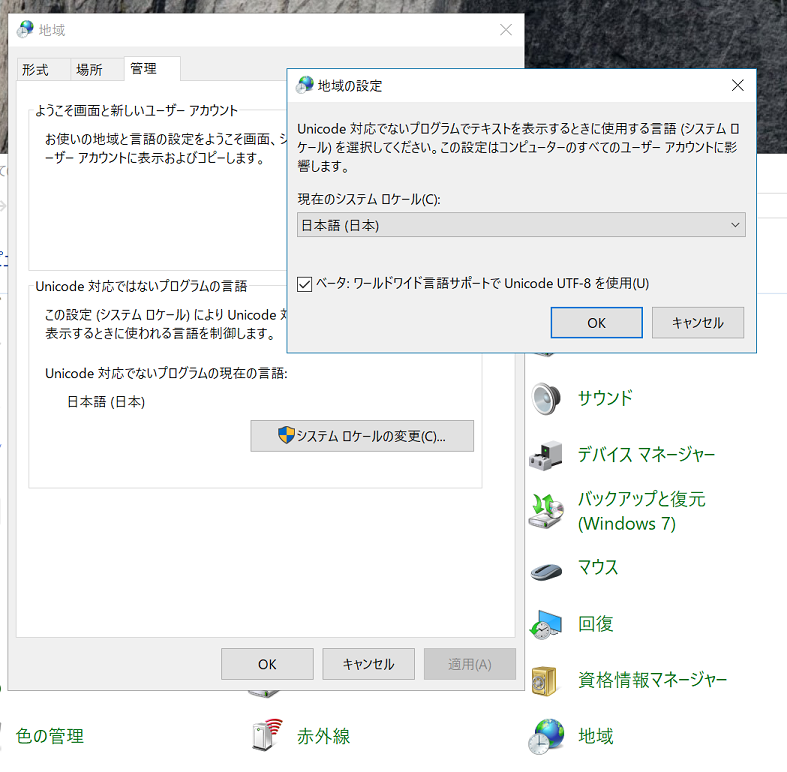
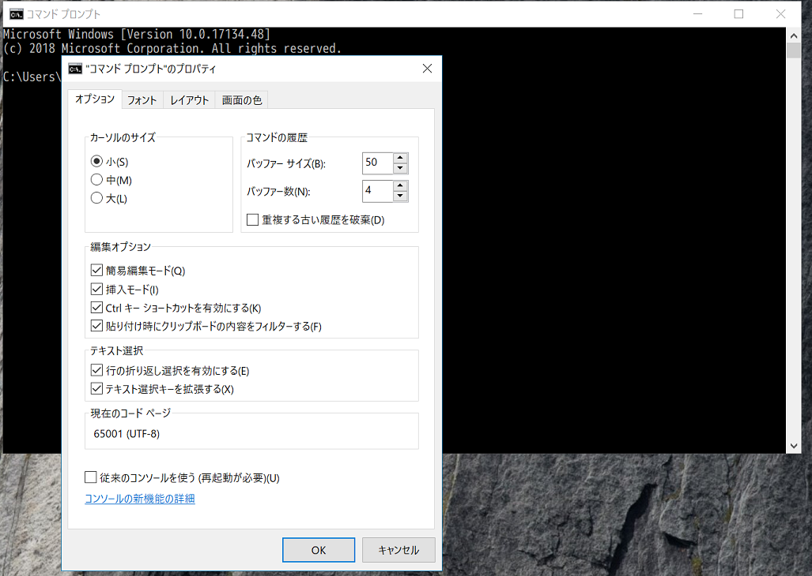

Windows10 April 2018 Updateで追加されたUTF-8モードを使う
2018-05-12 12:46:08 +0900 JST
Categories: Windows
Windows10恒例の大型アップデートです。いろいろUIが変わっていますが、1つ開発者にとってうれしい機能が追加されました。それがUTF-8モードです。
これまでは地域が日本になっている環境ではコマンドプロントがMS932(Shift-JIS)、PowerShellがUTF-16になっていました。
これをUTF-8で使うにはわざわざコマンドで文字コードを変える必要がありました。
しかしApril 2018 UpdateからUTF-8を強制するオプションが追加されました。
(まだベータなようなので自己責任でお願いします。)
コントロールパネルから地域 -> 管理 -> Unicode対応でないプログラムの言語を開くと、UTF-8モードにするオプションが追加されています。
チェックをつけると再起動を要求されるので再起動します。

コマンドプロントやPowerShellがUTF-8になっています。

これで echo hogehoge > test.txt するときちんとUTF-8なテキストが作成されます。
まだこの機能はベータ版ということで、私の環境ではLhazが作成するフォルダ名が文字化けするようになってしまいました。
しかしそれをもあり余るほどのメリットがUTF-8モードで受けられそうです。
ちなみに現在のInsider Previewではメモ帳が改行コードLFに対応したとか・・・